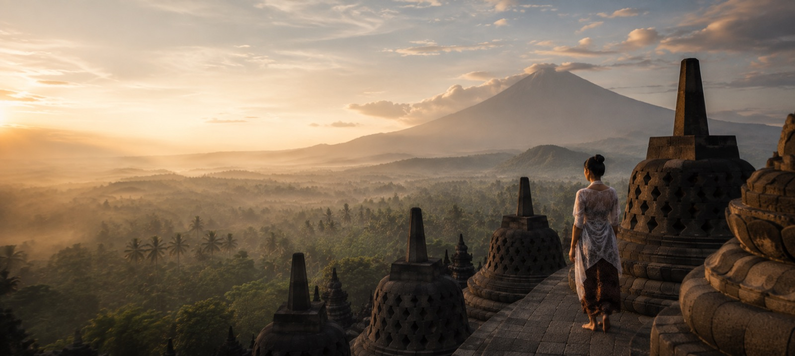
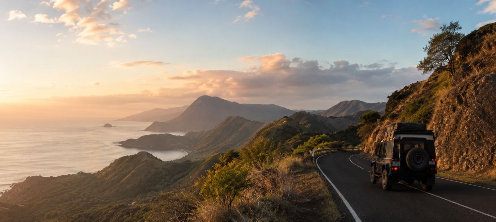
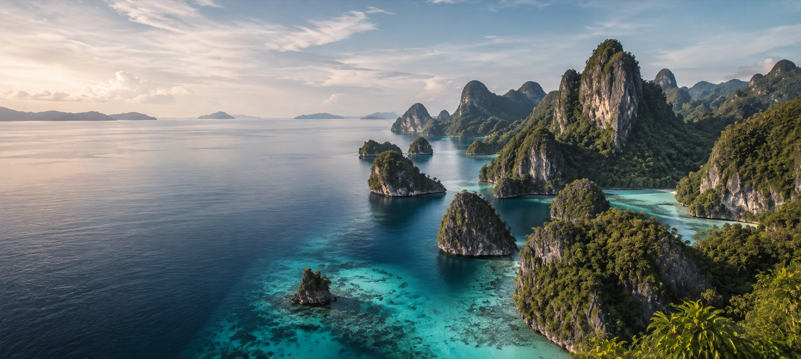
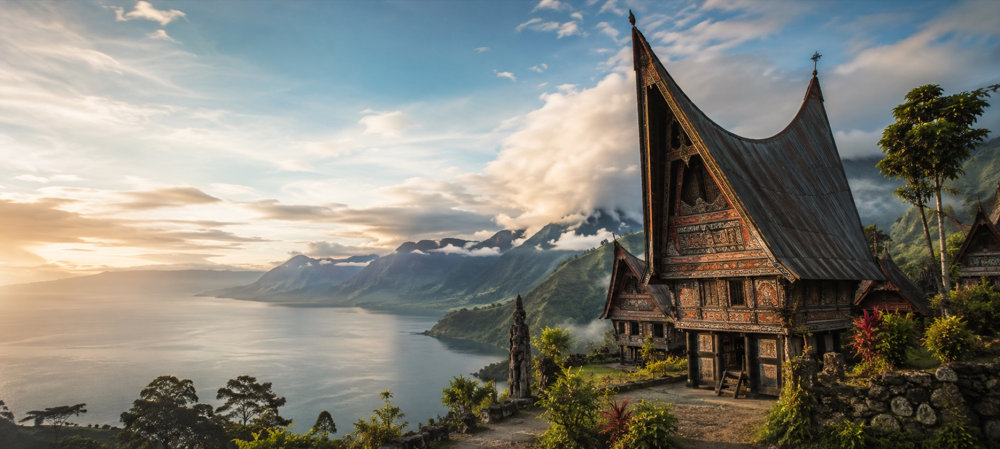
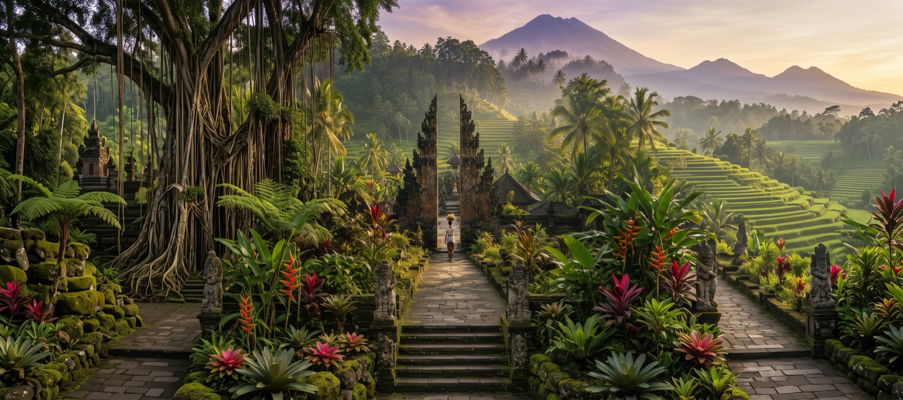

Signature 01 · Java
Java's Cultural Heart
Ten days from Yogyakarta to East Java, joining quiet temple hours, family kitchens, and volcanic landscapes.
10 days · Rp 49.600.000Read journey →
Signature Journeys
These are our original itineraries: researched on the ground, arranged with people we trust, and paced so the days never feel like a list.
Make one your own
Signature 01 · Java
Ten days from Yogyakarta to East Java, joining quiet temple hours, family kitchens, and volcanic landscapes.

Signature 02 · Flores
A road journey through highland villages, coffee country, and the empty blue between Flores and Komodo.

Signature 03 · West Papua
A private phinisi route for long swims, limestone channels, and evenings anchored beyond the usual circuit.

Signature 04 · Sumba
Wide landscapes, ancestral villages, and a coastal finish, travelled with guides who call the island home.

Signature 05 · Sumatra
Caldera roads and Samosir Island, built around music, architecture, and meals with local families.

Signature 06 · Bali
Sidemen, Munduk, and Pemuteran in one unhurried arc—less traffic, more walking, and time with makers.
Need a different rhythm?
Keep the route, change the pace, add a stop, or make it entirely private.
Compose from a SignaturePick the route closest to your interests.
Change dates, stays, pace, and inclusions.
We coordinate every confirmed detail.